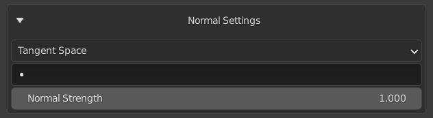
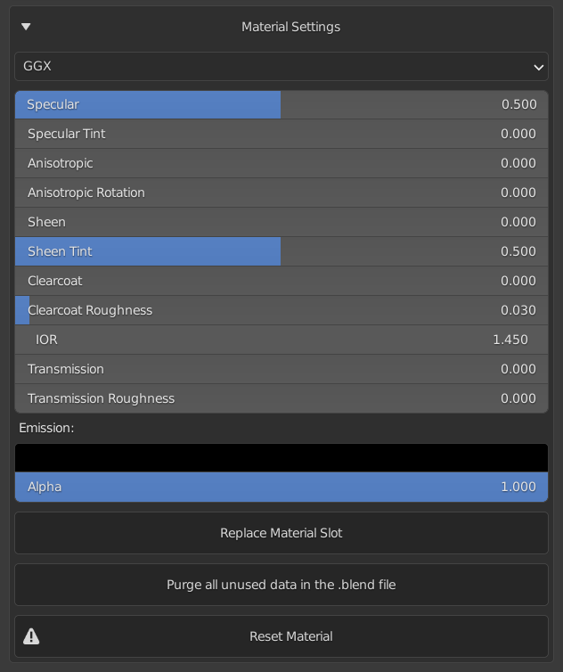

Material Settings#
The operators on these panels are explained from top to bottom.
Normal Settings#

Normal Space#
This will allow you to select the space of the normal maps used on the material.
UV Map#
This will allow you to select a UV Map.
Normal Strength#
This will allow you to set how strong the normal maps should be.
Note that this will not affect the result of the exported map. If you want your map to look the same in the viewport and on export, leave this value at one and adjust the strength on each layer.
Bump Settings#
Invert Bump#
This allows you to invert the direction of the bump maps.
Bump Strength#
This will allow you to set how strong the bump maps should be.
Note that this will not affect the result of the exported map. If you want your map to look the same in the viewport and on export, leave this value at one and adjust the strength on each layer.
Bump Strength#
This will allow you to set distance of the bump maps.
Displacement Settings#

Use Displacement#
This will create a displacement node and link the bump channel nodes into the displacement node.
Subsurface Settings#
Subsurface Method#
This will allow you to select the subsurface method between "Christensen-Burley" and "Random Walk".
Subsurface Slider#
This will allow you to set the amount of subsurface scattering on the material.
Add Thickness Map#
If you have a thickness map or baked one, this will create an image texture node and allow you to add the thickness map.
Subsurface Radius Sliders#
This will allow you to set the subsurface radius on the material.
Subsurface Color#
This will allow to set the subsurface color.
Link Subsurface Color#
This will allow you link the Albedo maps to the subsurface color input.
Material Settings#

Distribution#
This will allow you to select the shader distribution between "GGX" and "Multiscatter GGX".
Sliders#
The sliders listed below will affect their respective properties on the material.
- Specular
- Specular Tint
- Anisotropic
- Anisotropic Rotation
- Sheen
- Sheen Tint
- Clearcoat
- Clearcoat Roughness
- IOR (Index Of Refraction)
- Transmission
- Transmission Roughness
- Emission
- Alpha
Replace Material Slot#
This will show a popup that will allow you to replace the material in the active material slot with another material from the current .blend file.
Purge#
This will allow you to purge data in the current .blend file. This will not get rid of unused data immediately and we recommend getting Atomic Data Manager (A powerful open source addon that helps manage your Blender data).
Reset Material#
This will reset all the nodes on the current material and give you a clean start. You will get a prompt when you click on this, however if you hold SHIFT, this prompt will be overridden.